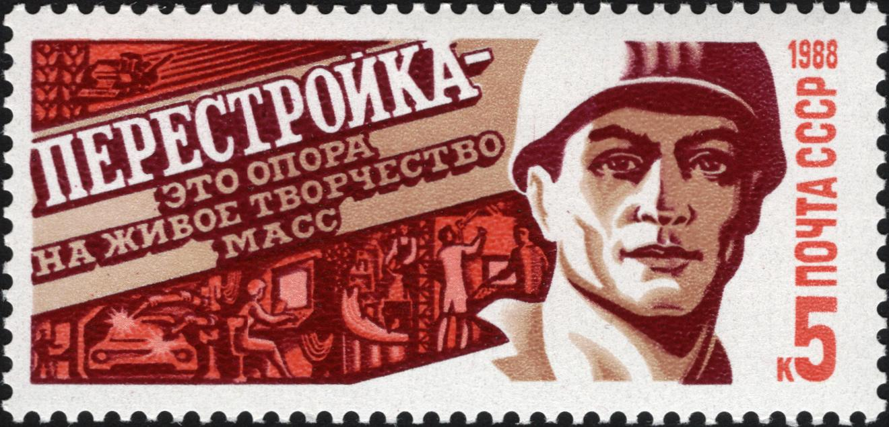
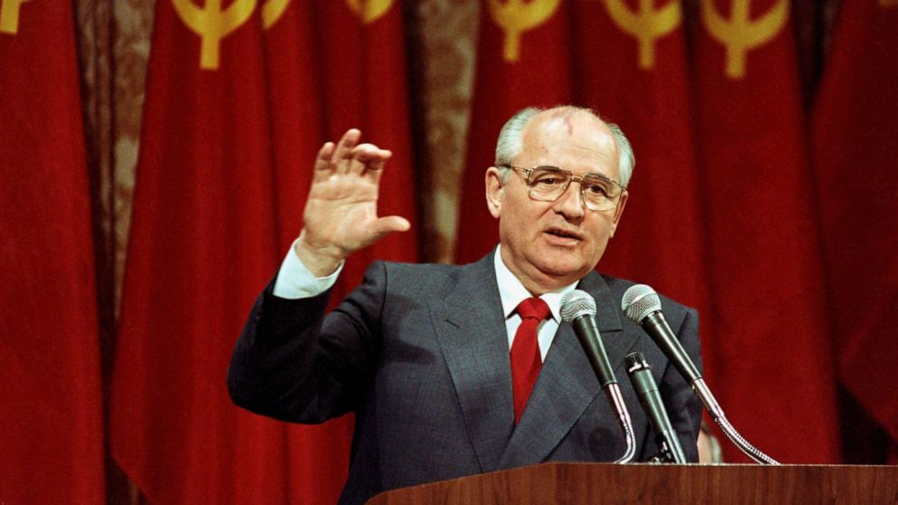

The Fall of the Soviet Union, officially known as the dissolution of the Union of Soviet Socialist Republics (USSR), was the process through which the Soviet Union, a socialist federation of 15 republics that existed from 1922 to 1991, ceased to exist as a single political entity. The collapse of the USSR marked the end of the Cold War, a decades-long geopolitical struggle between the Soviet Union and the United States, and it dramatically altered the global balance of power. The dissolution of the USSR occurred over several years of political, economic, and social turmoil, culminating on December 26, 1991, when the Supreme Soviet (the highest legislative body) formally declared that the Soviet Union no longer existed. This event was not simply the breakdown of a government but the disintegration of a superpower that had been a central figure in world politics for much of the 20th century. The fall was driven by a combination of internal weaknesses within the Soviet Union—such as economic stagnation, political corruption, and nationalist movements—as well as external pressures, including the arms race with the United States and ideological shifts in Eastern Europe.
An essential example in understanding the fall of the Soviet Union is the role played by Mikhail Gorbachev, who became the General Secretary of the Communist Party of the Soviet Union in 1985. Gorbachev introduced two major reforms—Glasnost (openness) and Perestroika (restructuring)—in an attempt to address the deep-seated problems of the Soviet state. Glasnost allowed greater freedom of speech, the press, and political openness, which unintentionally unleashed a wave of criticism against the Soviet system, exposing its inefficiencies and corruption. Perestroika, meanwhile, was aimed at restructuring the stagnant Soviet economy by introducing limited market mechanisms and reducing the state's heavy-handed control over the economy. These reforms, rather than stabilizing the Soviet Union, further exposed its weaknesses. The economic reforms failed to revive the economy, leading to increased shortages of goods and inflation, while political openness gave rise to nationalist movements in the Soviet republics. Gorbachev's reforms, meant to save the Soviet Union, instead hastened its downfall as they inadvertently weakened the Communist Party's control, leading to calls for independence in various republics.
Learning about the fall of the Soviet Union is essential for understanding the end of the Cold War, a nearly half-century ideological, political, and military standoff between the capitalist West, led by the United States, and the communist East, led by the Soviet Union. The collapse of the USSR in 1991 dramatically shifted the global balance of power and brought an end to the Cold War, changing the geopolitical landscape forever. With the Soviet Union's dissolution, the bipolar world—dominated by two superpowers—gave way to a unipolar world, with the United States as the sole global superpower. This marked the beginning of a new era in international relations, where the dynamics of global diplomacy, economics, and military alliances were redefined. The former Soviet republics had to adjust to a new world order, and many of these newly independent states faced significant challenges, such as political instability, economic crises, and the need to redefine their national identities. The dissolution of the Soviet Union also influenced major global institutions such as the United Nations, NATO, and the European Union, all of which had to adapt to a world where the ideological divide of communism versus capitalism no longer dominated international affairs. Understanding this transformation is crucial for grasping modern international relations and the global structures that still shape world politics today.
The fall of the Soviet Union has left a lasting impact on Russia and the former Soviet republics, influencing their political systems, economies, and societal structures to this day. The transition from a communist system to a capitalist market economy was traumatic for many of these countries, especially Russia, which experienced a decade of economic hardship, political instability, and social dislocation during the 1990s. The abrupt shift to capitalism under President Boris Yeltsin resulted in the privatization of state assets, which created vast wealth for a small group of oligarchs while leaving many ordinary Russians in poverty. The legacy of this chaotic period continues to shape Russian society, where inequality, corruption, and authoritarianism are still prevalent. Learning about the fall of the Soviet Union helps explain how Vladimir Putin rose to power in the 2000s, capitalizing on widespread dissatisfaction with the economic and political turmoil of the 1990s to restore a sense of order and national pride. Beyond Russia, the former Soviet republics have each followed different paths. Some, like the Baltic States (Lithuania, Latvia, and Estonia), integrated into Western institutions such as NATO and the European Union, while others, like Belarus and several Central Asian republics, retained authoritarian governments closely aligned with Moscow. Understanding these diverse outcomes is key to analyzing current geopolitical tensions, including Russia’s actions in Ukraine and the broader post-Soviet space.
The fall of the Soviet Union offers critical lessons on the fragility of empires and the powerful role of nationalism in shaping the political landscape. For much of the 20th century, the USSR was viewed as one of the two dominant superpowers, seemingly invincible in its size, military might, and ideological reach. However, despite its outward strength, the Soviet Union was plagued by internal weaknesses—economic inefficiency, political corruption, ethnic tensions, and widespread dissatisfaction—that eventually led to its collapse. The dissolution of the USSR illustrates how empires and powerful states, no matter how stable they may appear, can rapidly disintegrate when internal problems are ignored or mismanaged. Nationalism, in particular, played a crucial role in the fall of the Soviet Union. The USSR was a multi-ethnic federation, and as Soviet control weakened, nationalist movements in republics like Lithuania, Ukraine, and Georgia gained strength, demanding independence. These movements were further fueled by Gorbachev’s policies of Glasnost (openness) and Perestroika (restructuring), which allowed for greater freedom of expression and a questioning of Soviet authority. Understanding the fall of the Soviet Union thus offers valuable insights into how empires fracture from within and how nationalism can serve as both a unifying and divisive force in global politics. This knowledge is particularly relevant today, as the world continues to see nationalist movements gain momentum in various regions, challenging the status quo in ways reminiscent of the Soviet Union’s final years.
The fall of the Soviet Union did not occur overnight; rather, it was the result of a series of events and changes that unfolded over several years, particularly during the 1980s. The roots of discontent began to emerge in the late 1970s and early 1980s as the Soviet economy showed signs of stagnation. The centralized planning model that had driven industrialization and military expansion for decades was beginning to falter. Production inefficiencies, a lack of innovation, and increasing corruption created a sense of malaise within the Soviet populace. The Afghan War (1979-1989) further exacerbated these issues; it drained the Soviet economy, caused significant loss of life, and ignited public dissent. In this environment of growing discontent, Mikhail Gorbachev rose to power as General Secretary of the Communist Party in March 1985. His vision for reform—embodied in the policies of Glasnost (openness) and Perestroika (restructuring)— would soon catalyze the changes that ultimately led to the Soviet Union’s dissolution. More about Perestroika
Cr.: Wikipedia
Upon assuming leadership, Gorbachev implemented significant reforms aimed at revitalizing the Soviet economy and society. Glasnost was intended to promote transparency and freedom of expression, allowing Soviet citizens to voice their grievances and challenge the regime's authority. Initially, these reforms gained popularity, as many welcomed the newfound freedom of speech and the opportunity to criticize the government. However, the policy also exposed the deep-seated problems within the Soviet system, such as corruption, inefficiency, and the atrocities committed by the state. As people began to discuss these issues openly, nationalist sentiments started to rise within various Soviet republics, leading to demands for greater autonomy and independence. Simultaneously, Perestroika aimed to restructure the Soviet economy by introducing limited market mechanisms and reducing state control over production. However, these economic reforms led to further chaos and confusion, causing shortages of consumer goods and rising inflation. The economic turmoil fueled public discontent, and nationalist movements in the Baltic republics—Lithuania, Latvia, and Estonia—gained momentum, demanding independence from Soviet rule. The summer of 1989 saw a series of mass protests in these republics, culminating in events such as the Baltic Way on August 23, 1989, where over two million people joined hands to form a human chain across the three Baltic States, symbolizing their unity and desire for independence. Gorbachev’s inability to manage the mounting pressures from both the populace and the republics eroded the central government's control, signaling the beginning of the end for the Soviet Union. More about Soviet Union under Gorbachev
Cr.: ABC News
By 1990, the momentum for independence had grown considerably. Several republics held elections that favored nationalist movements, and Gorbachev's reforms had unintentionally set off a chain reaction of independence declarations. In March 1990, Lithuania became the first republic to declare independence, followed by Latvia and Estonia. Gorbachev attempted to maintain control by negotiating with nationalist leaders, but his efforts were met with limited success. The situation reached a critical point in August 1991 when hardline Communist Party members and military officials, fearing the loss of their power, staged a coup against Gorbachev in an attempt to restore the old order. On August 19, Gorbachev was placed under house arrest while the coup leaders declared a state of emergency.
However, the coup failed within a few days due to massive public resistance, most notably led by Boris Yeltsin, the president of the Russian Soviet Federative Socialist Republic. Yeltsin's defiance, which included standing on a tank outside the Russian parliament building, galvanized public support against the coup plotters. The coup's failure not only weakened Gorbachev's authority but also emboldened nationalist movements across the republics. In the aftermath, Yeltsin emerged as a key political figure, advocating for a stronger Russian sovereignty separate from the Soviet Union. This period marked a significant turning point, as the very institutions that had upheld the Soviet regime began to crumble, paving the way for the eventual disintegration of the USSR.
The final act in the drama of the Soviet Union's fall occurred in December 1991, when the leaders of Russia, Ukraine, and Belarus met in the Belavezha Forest to discuss the future of the USSR. On December 8, 1991, they signed the Belavezha Accords, which declared that the Soviet Union no longer existed and announced the formation of the Commonwealth of Independent States (CIS), a loose association of former Soviet republics. This agreement effectively ended the existence of the Soviet Union as a political entity. Gorbachev, who had been largely sidelined, opposed the dissolution but had no power to prevent it.
The final blow came on December 25, 1991, when Gorbachev resigned as president of the Soviet Union. In a televised address, he acknowledged the collapse of the Soviet state and stated that the USSR would cease to exist. The following day, the Supreme Soviet formally voted to dissolve itself, marking the official end of the Soviet Union. The red flag of the USSR was lowered from the Kremlin for the last time, symbolizing the conclusion of a significant chapter in world history. With the disintegration of the USSR, 15 independent republics emerged, each facing the challenges of establishing their own governance, economic systems, and national identities in a radically transformed geopolitical landscape. The fall of the Soviet Union not only reshaped Eastern Europe and Central Asia but also set the stage for new international relations dynamics in the post-Cold War world. More about Belavezha Accords
Cr.: Wikipedia
As the Soviet Union neared its dissolution in the late 1980s and early 1990s, its society was profoundly affected by significant economic struggles. The centralized economy, which had been a cornerstone of the Soviet system, began to show its age as inefficiencies, corruption, and a lack of innovation took a toll on production and distribution. During the Gorbachev era, policies of Perestroika aimed to introduce elements of a market economy and decentralize control. However, these reforms were poorly implemented, leading to widespread shortages of basic goods and services. As the government loosened its grip, the economy descended into chaos, characterized by hyperinflation and the sudden disappearance of many consumer products. Citizens faced long queues for food and essentials, and many experienced a significant decline in their living standards. The transition from a planned economy to a market-oriented one was tumultuous, with the emergence of oligarchs and black markets complicating the situation. As unemployment rose and social safety nets collapsed, a growing sense of despair settled over many citizens. The economic turmoil contributed to a widespread sense of frustration and disillusionment with the state, leading many to seek alternative political solutions and contributing to the rise of nationalist movements across various Soviet republics.
Amidst the economic hardships, the fall of the Soviet Union also ignited a resurgence of nationalism among various ethnic groups within the republics. For decades, the Soviet regime had suppressed national identities in favor of a unified Soviet identity, but as Gorbachev's policies of Glasnost and Perestroika opened the door for greater freedom of expression, ethnic tensions flared. Many republics, particularly in the Baltic region (Lithuania, Latvia, and Estonia), saw the rise of strong nationalist movements that demanded independence from Moscow’s control. In Ukraine, Georgia, and other republics, the push for autonomy became increasingly vocal and organized. The Soviet leadership's failure to address these nationalist aspirations effectively fueled resentment and dissatisfaction among various ethnic groups, leading to confrontations, protests, and, in some cases, violent clashes.
The year 1989 was particularly significant, as massive protests erupted across the Soviet republics. The Baltic Way, a peaceful demonstration where two million people formed a human chain across the three Baltic States, symbolized the strength of the independence movement and the desire for national sovereignty. The rise of nationalist sentiment was not just confined to the Baltic States; regions such as the Caucasus experienced their own movements for autonomy, leading to conflicts like the First Chechen War that erupted in 1994. As these nationalist movements gained momentum, they further eroded the Soviet Union’s control and created a patchwork of new identities and allegiances that complicated the process of political transition.
During the fall of the Soviet Union, significant social changes unfolded as citizens grappled with the implications of Gorbachev’s reforms and the impending collapse of their nation. The loosening of censorship and the introduction of a more open society allowed for a flourishing of ideas and cultural expressions previously suppressed. Literature, art, and music experienced a renaissance as people explored themes of identity, freedom, and resistance against the state. Intellectuals and dissidents, once marginalized, began to gain a public voice, contributing to a broader discourse about the future of the Soviet Union. Public sentiment shifted dramatically, as many citizens became increasingly skeptical of the Communist Party and disillusioned with the promise of communism, leading to widespread protests and demands for political reform.
Amidst this climate of change, citizens faced the harsh realities of economic decline, leading to increased crime rates, homelessness, and social disintegration. Many people experienced a profound sense of insecurity as traditional institutions, including the family unit, began to unravel under the pressures of economic hardship. The social fabric that had sustained Soviet society for decades frayed, as individuals became more focused on personal survival and less on collective ideals. The increase in individualism and the collapse of the state’s authority fostered a culture of skepticism towards institutions, further complicating the transition to new governance structures. The struggle to adapt to the rapidly changing environment led to a growing sense of alienation among many citizens, who felt caught between nostalgia for the stability of the Soviet past and anxiety about an uncertain future.
The role of the media and the flow of information played a crucial part in shaping society during the fall of the Soviet Union. With Gorbachev's policies of Glasnost, the state-controlled media landscape began to evolve, allowing for increased scrutiny of the government and the exploration of previously taboo subjects. Newspapers, television, and radio began to cover topics such as political corruption, social injustice, and historical grievances that had been suppressed under the communist regime. This newfound access to information empowered citizens to engage in discussions about political reform, human rights, and national identity. It also fostered a sense of solidarity among those advocating for change, as people across different republics shared their experiences and aspirations through newly liberated media channels.
However, the rapid transition from a tightly controlled media environment to a more open one came with its own challenges. As various nationalist movements and political factions emerged, the media landscape became fragmented and increasingly politicized. Different outlets began to promote their own agendas, leading to a proliferation of information that was often biased or sensationalized. This environment sometimes contributed to further societal divisions, as groups utilized the media to propagate their narratives, fueling tensions and conflict. Nonetheless, the media's role in disseminating information and mobilizing public sentiment was pivotal in shaping the course of events during the fall of the Soviet Union, helping to galvanize support for independence movements and provide a platform for voices that had long been silenced. Ultimately, this period marked a significant turning point in the evolution of media in the post-Soviet space, laying the groundwork for the complex media landscape that would follow.
One of the most significant lessons from the collapse of the Soviet Union is the inherent danger of centralized power and the suppression of dissent. The Soviet regime maintained strict control over political, economic, and social life, limiting individual freedoms and stifling public discourse. This lack of accountability and transparency led to widespread corruption, inefficiency, and a disconnect between the government and the populace. The failure to address the needs and aspirations of citizens ultimately fueled discontent and rebellion. As Gorbachev attempted to introduce reforms, the absence of a robust political framework allowed nationalist movements to gain momentum, revealing that when power is concentrated in the hands of a few, it can lead to instability and collapse. This lesson emphasizes the importance of democratic governance, where power is distributed, and diverse voices are heard, ensuring that leaders remain accountable to the people they serve.
The economic struggles that plagued the Soviet Union highlight the crucial relationship between economic management and social stability. The centralized, command-style economy failed to adapt to the needs of a changing world, leading to shortages, inefficiencies, and a lack of innovation. Gorbachev’s attempts at reform through Perestroika were well-intentioned but inadequately executed, resulting in further economic turmoil and disillusionment among the population. This experience underscores the necessity of a flexible economic system that can respond to the realities of global markets and technological advancements. Additionally, it illustrates the importance of gradual reforms that consider the socio-economic context rather than imposing abrupt changes. Economic resilience and adaptability are vital for maintaining societal cohesion and preventing unrest.
The collapse of the Soviet Union demonstrated the profound power of national identity and the desire for self-determination among various ethnic groups. For decades, the Soviet regime suppressed nationalist sentiments in favor of a unified Soviet identity. However, as Gorbachev's reforms loosened state control, previously suppressed ethnic identities re-emerged, leading to demands for independence across various republics. The independence movements in the Baltic States and other regions illustrated that a cohesive national identity could mobilize people and challenge an oppressive regime. This lesson emphasizes the importance of recognizing and respecting diverse identities within multi-ethnic societies and the necessity of accommodating these identities in governance structures. Fostering inclusivity and allowing for self-expression can mitigate tensions and build a more harmonious society.
The Soviet Union’s collapse underscores the vital role of civil society and public participation in political processes. Throughout the period of discontent, grassroots movements, non-governmental organizations, and ordinary citizens played crucial roles in advocating for change, from peaceful protests to the establishment of political alternatives. The rise of civic activism demonstrated that when citizens are empowered to participate in shaping their governance, they can effectively challenge authoritarian regimes and demand accountability. This lesson highlights the importance of fostering a vibrant civil society, encouraging political engagement, and protecting the rights of citizens to express their views and influence decisions. Strong civil institutions and active citizen participation are essential for building democratic resilience and preventing the recurrence of oppressive governance.
Finally, the collapse of the Soviet Union serves as a reminder of the interconnectedness of global politics and the influence of international factors on national events. The end of the Cold War era, shifting alliances, and economic pressures from the West played significant roles in shaping the trajectory of the Soviet Union’s decline. The interplay between domestic policies and global dynamics underscores that no country operates in isolation. International relations, economic interdependence, and the flow of ideas can profoundly affect internal stability and governance. This lesson encourages policymakers to consider the broader geopolitical context in which they operate and to engage in cooperative international relationships. Understanding that domestic challenges are often intertwined with global realities can lead to more effective responses to complex issues and the promotion of peace and stability in an increasingly interconnected world.
While the economic mismanagement of the Soviet Union is a well-known factor leading to its collapse, less recognized are the specific economic crises of the late 1980s that exacerbated the situation. The Soviet economy was already in decline, but a series of shocks—such as the drop in oil prices in 1985 and subsequent shortages—worsened the financial landscape. Oil had been a critical source of revenue for the Soviet state, and the plummeting prices led to severe budget deficits, which in turn sparked inflation and reduced the state’s ability to provide for its citizens. This economic instability prompted widespread discontent and a loss of faith in the Communist Party, setting the stage for greater demands for reform and independence among various republics.
While the Baltic states—Lithuania, Latvia, and Estonia—are often highlighted for their significant roles in the push for independence, other republics also experienced powerful nationalist movements that contributed to the Soviet Union's collapse. For instance, Ukraine saw the emergence of the Rukh movement, which mobilized millions around the ideas of national sovereignty and democratic reforms. Similarly, in the Caucasus, the rise of movements like the Chechen National Movement highlighted the diversity of nationalist sentiments across the Soviet Union. These movements gained traction as the central authority weakened, demonstrating that the desire for self-determination extended beyond the Baltic region and was a vital factor in the dissolution of the Soviet Union.
Mikhail Gorbachev's policies of Glasnost (openness) and Perestroika (restructuring) were intended to revitalize the Soviet system but often had the unintended consequence of accelerating its downfall. By promoting openness, Gorbachev allowed for criticism of the government and historical revisionism that had long been suppressed. This resulted in the surfacing of grievances about past atrocities, such as the Great Purge, and current socio-economic issues, leading to a wave of public dissent. As citizens began to question the legitimacy of the Communist Party, calls for reform evolved into demands for outright independence from the Soviet Union. Gorbachev’s reforms inadvertently created an environment in which long-standing frustrations could be openly voiced, leading to a loss of control by the central government.
One of the lesser-known events that significantly impacted the trajectory of the Soviet Union's collapse was the failed coup attempt in August 1991. Hardline members of the Communist Party attempted to seize power from Gorbachev while he was vacationing in Crimea, seeking to reverse his reforms. The coup ultimately failed due to widespread public opposition, spearheaded by Russian President Boris Yeltsin, who rallied citizens to resist the coup leaders. This event marked a turning point, as it galvanized the reformist and nationalist movements and diminished the power of the Communist Party. The failure of the coup not only discredited the hardliners but also accelerated the disintegration of the Soviet Union, leading to a swift acknowledgment of the independence of several republics in the months that followed.
Beyond the political and economic factors, cultural and social movements played a significant yet often overlooked role in the collapse of the Soviet Union. The resurgence of interest in national languages, traditions, and histories within various republics fostered a sense of identity that challenged the Soviet narrative. Movements such as the Samizdat (self-publishing) allowed for the dissemination of dissident literature and art that critiqued the regime and promoted ideas of freedom and democracy. The influence of musicians, writers, and artists who spoke against the regime inspired a cultural awakening that contributed to the political climate ripe for change. These movements helped to create a collective consciousness that transcended the political and economic struggles, ultimately reinforcing the drive toward independence and reform throughout the Soviet Union.
1. How did the Hubble Deep Field observation in 1995 change our understanding of the universe?
2. Describe one contribution of ancient Babylonians to early astronomy.
3. Explain the impact of the Islamic Golden Age on the development of astronomy during the medieval period.
4. How did the heliocentric model proposed by Copernicus revolutionize our understanding of the solar system?
5. What are some of the key research areas in contemporary astronomy, and why are they significant?